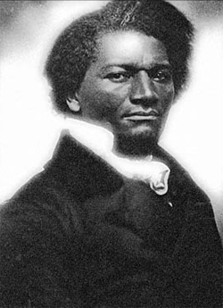
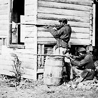
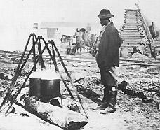
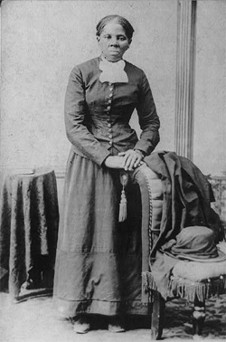
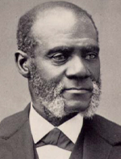
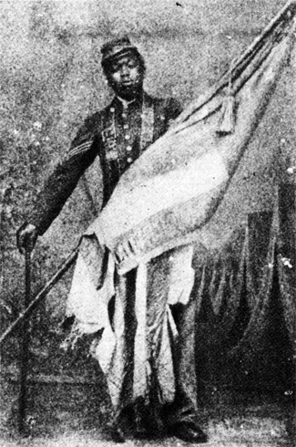
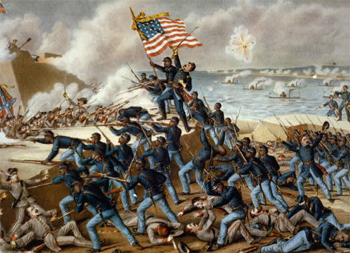

|
On April 12, 1864, three years to the day after the Civil War began with the
firing on Fort Sumter in Charleston harbor, George W. Hatton, a former slave who
had risen to the rank of sergeant in Company C, First Regiment, United States
Colored Troops, encamped near New Bern, N.C., sat down to write a letter and
reflect upon the circumstance in which he found himself. Hatton, his fellow
soldiers, and their families had lived generations as slaves in the American
South. Now they were part of a liberating army and serving a government that,
through a combination of intent and necessity, waged total war on the South in
order to destroy slavery. Hatton struggled to find the right words for his
sentiments. "Though the Government openly declared that it did not want the
Negroes in this conflict," he wrote, "I look around me and see hundreds of
colored men armed and ready to defend the Government at any moment; and such are
my feelings, that I can only say, the fetters have fallen--our bondage is over."
A month later, Hatton's regiment was encamped close to Jamestown, Virginia,
when several African-American freedwomen entered their lines showing evidence
that they had been severely whipped. Members of Hatton's company managed to
capture "a Mr. Clayton," the man who had allegedly administered the beatings.
The white Virginian was stripped to the waist, tied to a tree, and given twenty
lashes by one of his own former slaves, a William Harris, now a member of the
Union army. In turn, each of the women Clayton had beaten was given her chance
to lay the lash on the slaveholder's back. The women were given leave to, in
Sergeant Hatton's words, "remind him that they were no longer his, but safely
housed in Abraham's bosom, and under the protection of the Star Spangled Banner,
and guarded by their own patriotic, though once down-trodden race." Again Hatton
felt almost lost for words to describe the transformations he witnessed. "Oh
that I had the tongue to express my feelings," he declared, "while standing on
the banks of the James River, on the soil of Virginia, the mother state of
slavery, as a witness of such a sudden reverse! The day is clear, the fields of
grain are beautiful, and the birds are singing sweet melodious songs, while poor
Mr. C. is crying to his servants for mercy."
|

Frederick Douglass
|
Such acts of violent retribution by ex-slaves against their former masters
were rare in the wake of Emancipation. Most freedmen simply sought a portion of
land, freedom of movement, and security for their families in circumstances of
hardship and uncertainty. But Hatton's eloquence allows us to see many elements
in the meaning of the Civil War in African-American history. It was the
extraordinary time when blacks, free and ex-slave alike, came to identify their
own fate closely with the fate of the Union--the United States government and
its military and political fortunes. Because the war to save the Union became
the war to free the slaves, and because so many southern blacks liberated
themselves when the opportunity came, many thousands serving as soldiers and
sailors in Union uniforms, the Civil War and black Emancipation became
inextricable parts of the same epic event. Because the sectional balance of
political and economic power was fundamentally altered for a century in great
part out of the destruction of slavery, and because, simply put, the terrible
conflict would not have happened were it not for the presence of over four
million slaves and the array of contradictions they caused for the meaning of
America, the Civil War may rightly be considered, as many historians now
consider it, the "Second American Revolution."
The drama of Emancipation--four million people liberated from chattel slavery
in the midst of the world's first total war--is all the more striking because
for black leaders the 1850s had been a decade of discouragement and division
combined with unpredictable political crisis. Some black abolitionists like
Martin Delany, Henry Highland Garnet, and Mary Ann Shadd struggled to organize
emigration plans by which free blacks could start life over again in Africa, the
Caribbean, or Canada. Most antebellum free blacks living in the North (a quarter
million in the 1850s) followed the lead of Frederick Douglass, James McCune
Smith, or Sojourner Truth, who insisted that the future for African Americans
lay in America. This was not an easy position to sustain by the late 1850s,
especially in the wake of the Dred Scott Decision in 1857, wherein Chief Justice
of the U. S. Supreme Court Roger B. Taney proclaimed that blacks were "beings of
an inferior order ... so far inferior, that they had no rights which the white
man was bound to respect." But black and white abolitionists condemned such
ideas, and hope could also be found in the mounting sectional conflict over the
expansion of slavery into the West, and in the new antislavery Republican Party
to which it gave birth. Blacks welcomed the news of John Brown's Raid on Harpers
Ferry in 1859; some had actively participated in the ill-planned and ill-fated
raid on a federal arsenal in northern Virginia. Plotting slave insurrections,
however, had always been easier in theory than in practice, as many fugitive
slaves in the North knew from experience. Larger hopes rested in the idea that
somehow the conflict between North and South would boil into disunion and
political confrontation sufficient enough to cause the federal government to
move, militarily and legally, against slavery.
So, after the election of Abraham Lincoln in 1860, the secession crisis the
following winter, and the outbreak of war in the spring of 1861, African
Americans could take heart that the longed-for "jubilee" of black freedom that
they had sung and written about for years might now happen. Although prophecy
and reality would not meet easily, nor without ghastly bloodshed, most would
have agreed with Douglass's editorial of March 1861. "The contest must now be
decided, and decided forever," he wrote, "which of the two, Freedom or Slavery,
shall give law to this Republic. Let the conflict come." In a few short years
and through untold suffering, the rest of the American people, with differing
degrees of satisfaction or resistance, would be forced to see in the war the
same meaning that Douglass proclaimed. In the wake of the outbreak of war,
Douglass captured the anxiety and the hopes of his people as well as their
antislavery friends: "For this consummation we have watched and wished with fear
and trembling. God be praised! that it has come at last."
Responses to the Outbreak of War
Black responses to the outbreak of war ranged from an ecstatic willingness to
serve to caution and resistance. Across the North, free black communities sent
petitions to state legislatures, organized militia companies, and wrote to the
secretary of war offering their services on the battlefield. Only two days after
President Lincoln's call for volunteers, the Twelfth Baptist Church in Boston
hosted a meeting that the abolitionist William Wells Brown called "crowded as I
had never seen a meeting before." In one resolution after another, these black
Bostonians declared their support. "Our feelings urge us to say to our
countrymen," they announced, "that we are ready to stand by and defend the
Government with our lives, our fortunes, and our sacred honor." From Pittsburgh
came the offer of a black militia company called the "Hannibal Guards," who
insisted on being considered "American citizens." Although "deprived of all our
political rights," this group of eager soldiers understood the moment as a
historic main chance: They wished "the government of the United States sustained
|

African-American Sharpshooters
|
against the tyranny of slavery." From Philadelphia came the news that the
sizable black population of that city would raise two full regiments of
infantry. In New York City, blacks rented a hall to hold meetings and drill
their own militia in preparation for service. In Albany, Ohio, a militia company
organized, calling itself the "Attucks Guards" and flying a handmade flag
presented by the black women of the town. In Detroit a full black military band
under the command of a Captain O. C. Wood sought to enlist. And from Battle
Creek, Mich., a black physician, G. P. Miller, wrote to the War Department
asking for the privilege of "raising from 5,000 to 10,000 freemen to report in
sixty days to take any position that may be assigned to us (sharpshooters
preferred)."
But as promptly as blacks volunteered, their services were denied during the
first year of the war. Most states explicitly prohibited black participation in
their militias. The policy of the federal government reflected widespread white
public opinion: that the war was for the restoration of the Union and not the
destruction of slavery. On a deeper level, most white Northerners held the view
that "this is a white man's war," as the police in Cincinnati told a large
gathering of blacks attempting to find a hall in which to hold their patriotic
meetings. Amid this fear, confusion, and bravado, the deep-seated racism of the
mid-nineteenth century prevailed as the United States Congress and the War
Department made it federal policy to deny enlistment to black soldiers. All of
this occurred amid widespread assumptions in the North that secession and
rebellion would be easily put down in one summer. But underneath all such social
currents rested the fear that white men simply would not shoulder muskets next
to black men. Soon, a tragically divided people would be forced to see how
historical forces had been unleashed that would compel them to act both because
of and above their prejudices.
African Americans Debate the War
A vigorous debate about support for the war ensued among blacks during the
first year of the conflict. Stung by the rejection of their early enthusiasm for
enlistment, some blacks turned away in anger, declaring--as did a man in Troy,
N.Y.--that "we of the North must have all the rights which white men enjoy;
until then we are in no condition to fight under the flag which gives us no
protection." An "R.H.V." from New York City was even more explicit in opposing
black participation. "No regiments of black troops," he said, "should leave
their bodies to rot upon the battle-field beneath a Southern sun, to conquer a
peace based upon the perpetuity of human bondage." Black newspaper editors
divided over the issue. The Anglo-African (New York) vehemently urged
support for the war as a crusade against the slaveholding South, and therefore
in blacks' long-term interests. Frederick Douglass, in his Douglass
Monthly (Rochester, N.Y.), demanded black enlistment from the first sounds
of war. The exclusion policy angered him deeply, and by September 1861, he
attacked the Lincoln administration's "spectacle of blind, unreasoning
prejudice," accusing it of fighting with its "white hand" while allowing its
"black hand to remain tied." The Christian Recorder, the African
Methodist Episcopal Church newspaper in Philadelphia, dissented from Douglass's
call for troops. "To offer ourselves now," wrote its editor Elisha Weaver, "is
to abandon self-respect and invite insult." Blacks should not fight, said
Weaver, in a war where "not only our citizenship, but our common humanity is
denied." The war was not yet the social revolution it would become; and no black
leader could see the end from the beginning.
African Americans in the South
In the South, the bulk of African Americans found themselves living in the
Confederate States of America, a hastily created nation mobilizing for war on a
scale no one had imagined, determined to preserve slavery as the basis of its
socioeconomic system, and soon under siege and invasion. All of these
circumstances made for what would eventually become--especially when the Yankee
armies came in large numbers to Virginia, the coast of the Carolinas, the
Mississippi River Valley, and the Tennessee-Georgia region--a mass exodus of
both military and self-emancipation from 1862 to 1865. But at the outset of the
war, motivated by local pride, protection of the home place, or fear of
reprisal, some southern blacks actually offered their services to the
Confederate armies. Two Louisiana regiments of blacks were enlisted in 1861, but
were never allowed to serve in active duty.
|

A contraband cooks for Union troops.
|
In March 1861, in a speech in Savannah, Georgia, Vice President of the
Confederacy Alexander H. Stephens stated, at least implicitly, what all
Southerners would come to know--that it was black Southerners who might have the
most at stake in this war. Comparing the Confederacy to the federal government
created in 1787, Stephens declared that the South's move for independence "is
founded upon exactly the opposite ideas; its foundations are laid, its
cornerstone rests, upon the great truth that the Negro is not equal to the white
man; subordination to the superior race is his natural and moral condition."
Stephens knew, as did the masses of slaves anticipating "de Kingdom comin' an'
de year ob Jubilo," that the status of slavery was central to the war. Before it
was over in 1865, that founding Constitution of 1787 would undergo the
beginnings of a process of fundamental change.
One of the few economic strengths in the Confederacy's war-making capacity
was its huge supply of black labor. Tens of thousands of slaves were pressed
into service to build fortifications and to work as teamsters, cooks, boatmen,
blacksmiths, laundresses, and nurses. Slaves had long performed these tasks in
the South; so, as the massive mobilization took place all across the
Confederacy, black forced labor became one of the primary means by which the
South waged war. Blacks were "hired out" by their owners to work in ordnance
factories, armories, hospitals, and many other sites of military production and
transport. In Georgia alone, an estimated ten thousand blacks worked on
Confederate defenses. In some twenty-nine hospitals across northern Georgia in
1863, blacks comprised 80 percent (nearly one thousand people) of the workers,
especially the nurses, cooks, and laundresses. Early in the war many
slaveholders were quite willing to offer the labor of their slaves to the
South's cause. But as the conflict endured, and the displacement of people
became ever more chaotic, many owners began to transfer (or, as this process
became known, "refugee") their slaves to the interior.
|

Harriet Tubman
|
Huge numbers of slaves were set in motion by these removals. Many blacks
experienced separation of families as men were forced into Confederate labor
gangs and women and children were often left to their own devices back on the
home place, or themselves were eventually caught up in refugee movement in the
face of advancing Union armies. But especially for males, this social flux,
however great the hardship, provided enormous opportunity for escape to Union
lines. Especially in the upper South and along the coasts, but eventually in the
South's heartland as well, many slaves would find freedom by slipping away from
Confederate railroad crews or joining Union forces after decisive battles.
Indeed, thousands of blacks were "employed" (not always with compensation) as
military laborers on the Union side as well. Wherever Union forces advanced into
the South, so important were blacks as foragers, wagon masters, construction
workers for fortifications and bridges, and cooks and camp hands that a visitor
to any Yankee army camp would see hundreds and sometimes thousands of black
faces. Ex-slaves who were familiar with the southern countryside also served
numerous Union officers as spies and sources of military intelligence. Harriet
Tubman, famous for her earlier career as a "conductor" on the Underground
Railroad, was one of the countless blacks who served the Union cause as guides
and spies. She was formally commended by the secretary of war and at least five
high-ranking Union officers for her two years' work in the Sea Islands as a
nurse and a daring scout.
Driven by human will and military necessity, an enormous exodus of liberation
ensued throughout the first three years of the war. The black Union soldier and
later historian George Washington Williams observed both motivations. "Whenever
a Negro appeared with a shovel in his hands," wrote Williams, "a white soldier
took his gun and returned to the ranks." "It was an exodus whose Moses was
multiple, wrote historian Benjamin Quarles, an Odyssey whose Ulysses was
legion."
Black Men in Blue
Nothing so typified the eventual antislavery
character of the Civil War as the black soldier in Union blue. As the war
dragged on, events moved so quickly that Emancipation and black enlistment
became inseparable realities. From the first designation of fugitive slaves as
"contrabands" (confiscated property of war) in 1861, abolitionists demanded that
blacks be recruited as soldiers. The initial exclusion policy proved untenable
|

Henry Highland Garnett
|
in the face of total war, and by 1862, due to mounting white casualties,
northern public opinion was increasingly favorable to the employment of black
troops. That sentiment grew even stronger in the spring of 1863, when the
federal government instituted a much-despised conscription law.
In the wake of the bloody and unsuccessful Peninsular campaign in July 1862,
Congress enacted the Second Confiscation Act, empowering Lincoln to "employ ...
persons of African descent ... for the suppression of the rebellion." Under
vague authority, initial black regiments had already been organized by zealous
Union commanders in Louisiana and Kansas. But by August 1862, the War Department
authorized the recruitment of five regiments of black infantry in the Sea
Islands of South Carolina and Georgia. By Thanksgiving Day, Thomas Wentworth
Higginson, the commander of the First South Carolina Volunteers (the first
regiment of ex-slaves), looked out of the broken windows of an abandoned
plantation house in the Sea Islands, "through avenues of great live oaks," and
observed that "all this is the universal Southern panorama; but five minutes
walk beyond the hovels and the live oaks will bring one to something so
un-Southern that the whole Southern coast at this moment trembles at the
suggestion of such a thing--the camp of a regiment of freed slaves."
Following Lincoln's Emancipation Proclamation in January 1863, the governors
of Massachusetts, Connecticut, and Rhode Island were authorized to raise black
regiments. Governor John Andrew of Massachusetts had been especially
instrumental in convincing the Lincoln administration to make such moves.
Abolitionist George L. Stearns was commissioned to organize black recruiters,
and by April black abolitionists such as Douglass, Martin Delany, Henry Highland
Garnet, John Mercer Langston, William Wells Brown, Charles Lenox Remond, and
O.S.U. Wall were enlisting young free blacks from across the North and sending
them to Readville, Mass., where they became part of the Fifty-Fourth
Massachusetts Colored Regiment. That spring, as a recruiting document, Douglass
published his "Men of Color to Arms!," a pamphlet that captured the
revolutionary character of the war now imagined in black communities. "I urge
you to fly to arms and smite with death the power that would bury the government
and your liberty in the same hopeless grave," Douglass demanded of young
recruits, of whom his own first two were his sons Lewis and Charles.
|

Sgt. William Carney, of the Massachusetts 54th. At Fort
Wagner, when the color bearer fell, Carney seized the flag and made it back to
his unit, despite bullets in the head, chest, arm and leg. He was the first of
23 African Americans awarded the Congressional Medal of Honor, though he had to
wait 37 years to get it.
|
The Fifty-fourth Massachusetts became the famous test case of what the
northern press still viewed as the experiment with black troops. Its valorous
assault on Fort Wagner on the sands around Charleston harbor in South Carolina,
July 18, 1863, where the regiment suffered 100 dead or missing and 146 wounded,
served as a tragic but immensely symbolic demonstration of black courage.
Indeed, many white Northerners, as well as Confederate soldiers, discovered that
black men would and could fight. Blacks who served in the Union army and navy
during the Civil War fought for many reasons. They fought for the simplest and
deepest of causes: their own freedom and that of their families. They fought
because events had seemed to provide an opening to a new future, to the
achievement of the birthright of citizenship through military service. They also
fought for the right to fight, for a sense of human dignity. They fought because
they lived in a world that so often defined "manhood" as that recognition gained
by the act of soldiering.
In May 1863 the War Department established the Bureau of Colored Troops, and
from then until the end of the war, quartermasters and recruiting agents labored
competitively to maximize the number of black soldiers throughout the South. The
manpower needs of the Union armies were endless, and black enlistment became the
most direct way to undermine and destroy slavery. By the end of the war in April
1865, the nearly 180,000 blacks in the Union forces included 33,000 from the
northern free states. The border slaveholding states of Delaware, Maryland,
Missouri, and Kentucky provided a total of 42,000, half that number from
Kentucky alone. Tennessee sent 20,000; Louisiana, 24,000; Mississippi, nearly
18,000; and the remaining states of the Confederacy, almost 40,000. These
statistics demonstrate that Emancipation and black enlistment became twin
functions of the Union war effort. Wherever northern armies arrived first and
stayed the longest, there the greatest numbers of black men became Yankee
soldiers.
In desperation, some slaveholders offered wages and other privileges in order
to induce their slaves to stay. As the war dragged on, some black men eagerly
enlisted with the Union, but others were forced into service by impressment
gangs--sometimes composed of black soldiers--as a means of filling the ranks.
Like their white comrades, black soldiers suffered untold hardships. But they
sometimes received inadequate medical care compared with white troops, faced
possible re-enslavement or execution if captured, and encountered several overt
forms of discrimination within the Union ranks. Virtually all commissioned
officers in black units were white, and though promises had been made to the
|

An artist's depiction of the Fifty-Fourth Massachusetts
charge on Fort Wagner
|
contrary during the early recruiting period, the federal government capitulated
to racism with an explicitly unequal pay system for black soldiers. White
privates in the Union army received $13 per month plus $3 for clothing, while
black men received only $7 plus clothing. As a matter of both principle and dire
hardship for their families, the unequal pay issue angered black soldiers and
recruiters more than any other form of discrimination. During 1863 many black
regiments resisted the policy, refusing to accept any pay until it was
equalized. Open revolt resulted in at least one regiment, the Third South
Carolina Volunteers, being led by black sergeant William Walker. Walker led his
company in stacking their arms at their commanding officer's tent in protest of
unequal pay. After a lengthy court-martial, Walker was convicted of mutiny, and
in February 1864 he was executed by a firing squad before the audience of his
own brigade. The strictures of military law, mixed with racism, made war in this
instance an extremely unforgiving business.
Black Families During the Civil War
Black families, especially women, suffered not only the dislocations of war,
but tremendous physical and financial hardship as well. Many, like Rachel Ann
Wicker of Piqua, Ohio, wrote in protest to governors and President Lincoln. In
September 1864, Wicker informed Governor Andrew of Massachusetts (her husband
was in the Fifty-fifth Massachusetts) that "i speak for myself and Mother and i
know of a great many others as well as ourselves are suffering for the want of
money to live on." She demanded that Andrew explain "why it is that you Still
insist upon them takeing 7 dollars a month when you give the Poorest White
Regiment that has went out 16 dollars." Under pressure from such women, from
black communities, abolitionists, and governors, Congress enacted equal pay for
blacks and whites in June 1864.
In spite of ill treatment, black soldiers--motivated by their own sense of
freedom, feeling a sense of dignity that perhaps only military life could offer,
and politicized as never before--participated in some 39 major battles and 410
minor engagements during the last two years of the war. Many vocal white critics
were silenced when black units fought heroically.
Source: Jack Salzman, ed. Encyclopedia of African-American Cultural
Heritage (New York: MacMillan, 1995), 572-575.
|